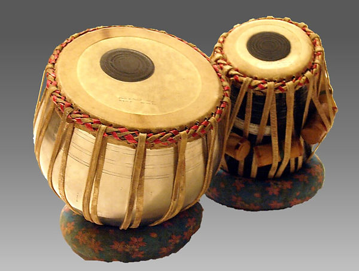

Membrane Instruments
Drums

A drum kit is a collection of drums and other percussion instruments. It is played by a single player with drumsticks. It has some feet operating pedals that control the hi-hat cymbal and the beater for the bass drum. The drum kit may be divided into four parts such as breakables(sticks, snare drum, etc), shells(bass drum, toms, etc), extensions, and hardware(drum stands, pedal, etc). The drum is an instrument that gives a living effect to the music so if you love playing drums then what are you waiting for. Your drum is in the list of those instruments that can provide you employment. So it’s time to follow your passion.
Audio Clip
video Clip
Tabla
The tabla is actually two drums played by the same performer. Both drums have compound skins onto which a tuning paste, or siyahi, is added to help generate the wide variety of tones these drums can produce. The bayan is the larger of the two drums and is generally made of metal or pottery. The siyahi on the bayan is off-center, which allows the performer to add variable pressure on the skin, changing the pitch of the instrument with the palm of his or her hand while striking it with the fingertips. The smaller drum is called the dahini, or sometimes referred to as the tabla. Dahini are usually made of heavy lathe-turned rosewood and provide much higher pitch sounds than does the bayan.
Audio Clip
video Clip
Bass Drum
The bass drum is special type of membranophone that is struck with a mallet.
A mallet is a different type of drumstick where the end of the drumstick ends in a heavier object rather than a small wooden bead.
In the case of a drumkit, the bass drum is played with a kick pedal so the drummer can play multiple drums with their hands and use the kick pedal to play the bass drum. The kick pedal has what is called a kick drum beater which strikes the drum.
Another key difference between bass drums and other drums is that it’s huge. In the case of concert bass drum heads they come in diameters ranging from 26 inches to 40 inches. Drum kit bass drums are much more modest in diameter and range from 16 inches to 22 inches. Although, just like anything, there are exceptions that fall outside of those ranges for drummers who want to experiment.
An example of a bass drum being played with mallets
With a larger surface area the bass drum is designed to play lower frequencies. The type of mallet or beater determines the attack of the frequency. The sharper the attack, the more the bass drum is noticed.
The bass drum frequencies are so low that they are used non-melodically. Their sole purpose is to provide emphasis to the rest of the instruments and can be played in such a way to establish a steady beat that drives the song.
Audio Clip
video Clip
Congas
Conga drums are another membranophone that people often mix with big bongo drums because they often come in pairs (or sets of 3 or more).
Congas are hand drums, and like bongos have their bearing edge exposed. This allows for a wide range of diverse sounds. The hands can apply pressure to the drum head and tighten the pitch for particular strikes to create a fantastic array of sounds.
Conga drums mounted on a stand
Congas are much larger than other hand drums and are around 2 and a half feet long and are around 9 to 13 inches in diameter (at the drumhead). Conga drumshells are typically curved and are wider in the midsection. They can be played while resting on the floor but they are often placed on a stand as you see in the above picture.
Audio Clip
video Clip
Tambourine
Certain types of tambourines are membranophones, while others are simply idiophone (something in which the body makes the sound, like a cymbal or a bell). Tambourines have jingly cymbals on them that when shaken ring with that classic tambourine sound.
The tambourine style that is a membranophone is the kind with a drum head attached. This drum head can be played with the fingers to add to the rhythm of the small cymbals.
Audio Clip
video Clip
Dhol
Dhol is a percussion instrument made of wood, brass, leather, cotton, parchment and metal. This folk instrument is found in West Bengal, Orissa, Kerala, Himachal Pradesh and Assam. Majorly used as an accompaniment in traditional and folk music and dance performance. Also used as an instrument in public announcements.